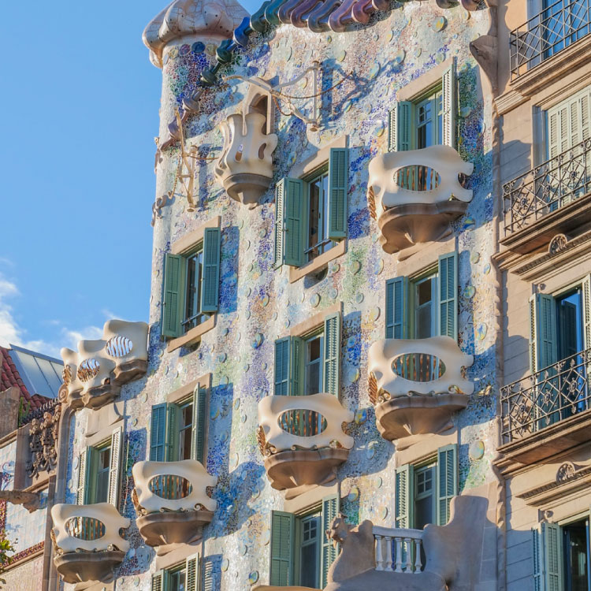
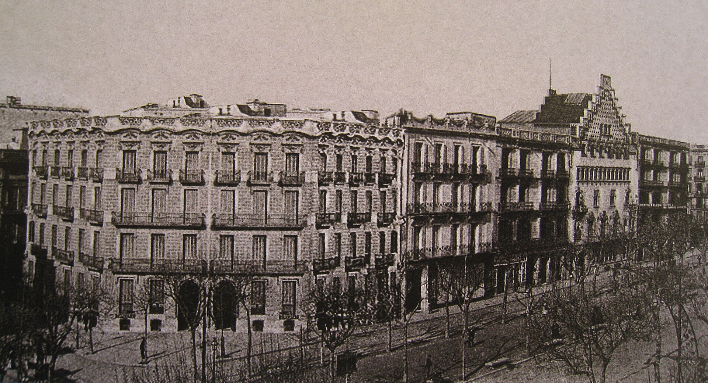
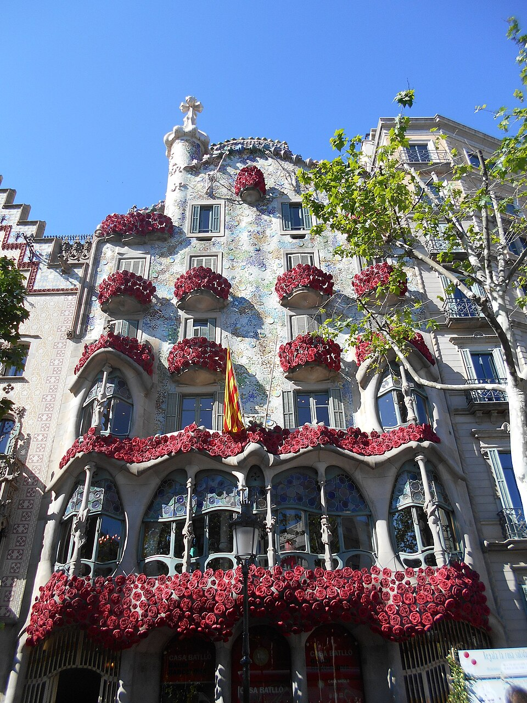

INICIO
La Casa Batlló es un edificio obra del arquitecto Antoni Gaudí, máximo representante del modernismo catalán. Se trata de una remodelación integral de un edificio previamente existente en el solar, obra de Emilio Sala Cortés. Está situado en el número 43 del paseo de Gracia de Barcelona, la ancha avenida que atraviesa el distrito del Ensanche (Eixample), en la llamada Manzana de la discordia, porque alberga además de este edificio otras obras de arquitectos modernistas: la Casa Amatller, que colinda con la de Gaudí, obra de Josep Puig i Cadafalch; la Casa Lleó Morera, obra de Lluís Domènech i Montaner; la Casa Mulleras, de Enric Sagnier; y la Casa Josefina Bonet, de Marceliano Coquillat. La construcción se realizó entre los años 1904 y 1906. La Casa Batlló es un reflejo de la plenitud artística de Gaudí: pertenece a su etapa naturalista (primera década del siglo XX), periodo en que el arquitecto perfecciona su estilo personal, inspirándose en las formas orgánicas de la naturaleza, para lo que puso en práctica toda una serie de nuevas soluciones estructurales originadas en los profundos análisis efectuados por Gaudí de la geometría reglada. A ello añade el artista catalán una gran libertad creativa y una imaginativa creación ornamental: partiendo de cierto barroquismo sus obras adquieren gran riqueza estructural, de formas y volúmenes desprovistos de rigidez racionalista o de cualquier premisa clásica.

HISTORIA
El edificio fue construido en 1875 por Emilio Sala Cortés (1841-1920),[3] un arquitecto autor de varios edificios en Barcelona y provincia, como la Casa Elizalde (1885), el Palacio Tolrà en Castellar del Vallès (1890), el Hotel Duques de Bergara (1898), la Casa Emilià Carles (1898), las Escuelas Ribas en Rubí (1912-1915) o el Panteón de la familia Fargas en La Garriga. Sala era además profesor de la Escuela de Arquitectura de Barcelona, y fue uno de los maestros de Gaudí, al que empleó ocasionalmente como delineante.

DESCRIPCIÓN
Gaudí diseñó el proyecto de remodelación de la Casa Batlló a los 52 años, cuando ya había superado las modas historicistas de mediados del siglo XIX, y su estilo arquitectónico había trascendido el mero academicismo para reflejar una visión personal de la arquitectura, de gran originalidad y sello innovador. Sin embargo, como es habitual en las obras de Gaudí, el diseño y la innegable artisticidad del conjunto no privan de que el edificio esté concebido bajo el prisma de la funcionalidad, a la que el arquitecto subordina todos los demás elementos. En ese sentido, cabe resaltar la importancia otorgada tanto a la iluminación como a la ventilación, dos ejes básicos para una vida sana y confortable en un edificio de viviendas. Para ello dispuso un gran patio central en el centro del edificio, al que daban las habitaciones de servicios, mientras que los salones y los dormitorios daban a la fachada. Este patio también articulaba el movimiento dentro del edificio, a través de escaleras y un ascensor. La Casa Batlló ocupa un total de 4300 m², con 450 m² de superficie por cada piso. Tiene 32 metros de altura y 14,5 de ancho, aumentando considerablemente las anteriores proporciones del edificio: 21 metros de altura y 3100 m². El edificio tiene ocho plantas: bajo el nivel de la calle se encuentra un sótano, destinado a carboneras y trasteros; la planta baja se dedicó inicialmente a cochera y luego a almacén, y junto a los accesos a las viviendas se ubicó una tienda, ocupada primero por el establecimiento de fotografía Lumière, luego por la productora cinematográfica Pathé Frères y posteriormente por la Galería Syra; la planta noble estaba ocupada enteramente por la familia Batlló, y contiene además un gran patio en la parte posterior del edificio; las otras cuatro plantas estaban destinadas a alquiler, con dos viviendas cada una; por último se encuentra un desván, destinado a zona de servicio, y cubierto por la azotea.
